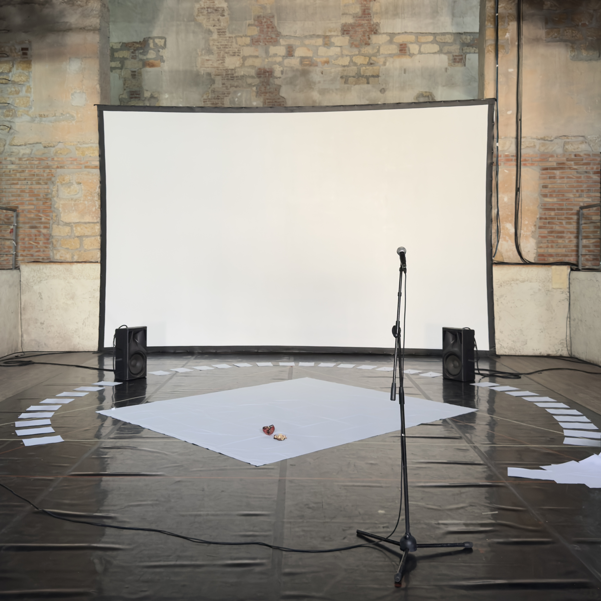

/works/esterno, dio / draussen, got
musician, sound engineer and audio programmer based in Bologna (IT).
Working between music producing, live sound engineering and technologies.
|

|
esterno, dio / draussen, got
80 anni dopo
32.000 italian* deportat* per motivi politici nei campi di concentramento nazisti
33 audiocassette registrate
1 studente di psicologia
2 performer
molti fogli di carta
esterno, dio / draussen, gott è una performance teatrale multimediale basata sull’ascolto delle testimonianze orali di donne e uomini italiani sopravvissuti alla deportazione di oppositori politici al regime fascista fra il 1943 e il 1945. Le voci di 51 ex deportati vennero registrate nel 1995 da una studente di psicologia e raccolte in un archivio.
Attraverso lo sfoglio dei materiali originali e il montaggio in scena, i performer preparano con delicatezza all’ascolto dei racconti delle violenze subite dai deportati nei campi di concentramento nazisti. Frammenti di una narrazione collettiva, una ferita invisibile nella società italiana ed europea.
«La verità fa male quando scotta… Quando non è condivisa, la verità fa male».
(Celio Bottaro, cassetta 11 _ lato B)
di Filippo Michelangelo Ceredi IT/DE
drammaturgia FIlippo M. Ceredi e Giovanni Onorato
performer Filippo M. Ceredi e Giovanni Onorato
registrazioni audio d’archivio Fiorella Rodella
testi originali, scenografia e visual Filippo M. Ceredi
sound design Andrea Trona
luci Isadora Giuntini
sguardo esterno Noèmie Regnaut e Noemi Piva
Realizzato nell’ambito del progetto “Voci dalla storia” ideato da Liberty e sostenuto da Unione Reno Galliera, Città Metropolitana di Bologna, Comuni di Baricella, Granarolo dell’Emilia, Malalbergo e Minerbio, Parco della Memoria Casone del Partigiano “Alfonsino Saccenti”, con il contributo di Regione Emilia Romagna
con il contributo di ANED - Associazione nazionale ex deportati nei campi nazisti
con il supporto di ZONA K, AtelierSì, Fivizzano 27
produzione F*M^C_2025
Presentato a Teatro Bastardo con il supporto dell’Ambasciata della Repubblica Federale di Germania in Italia - Roma e in collaborazione con il Goethe-Institut Palermo
|
|